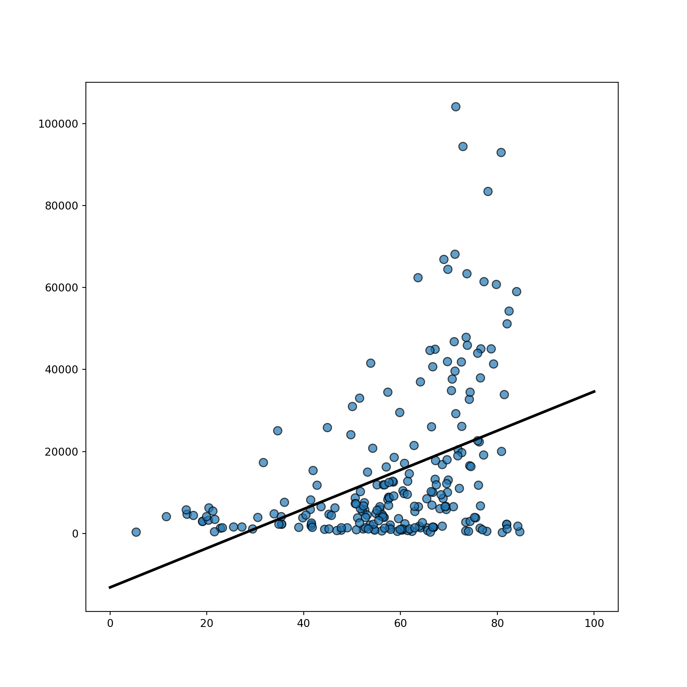
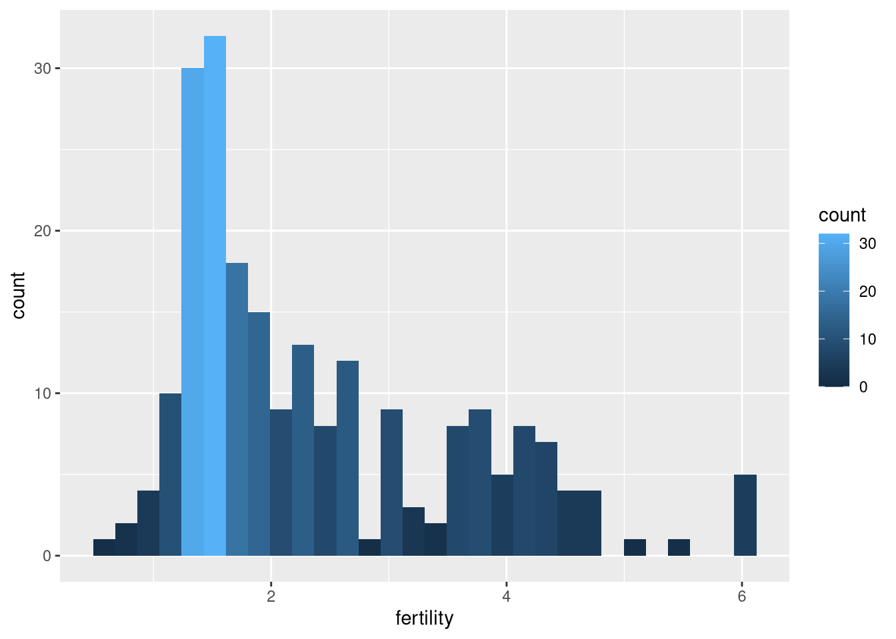
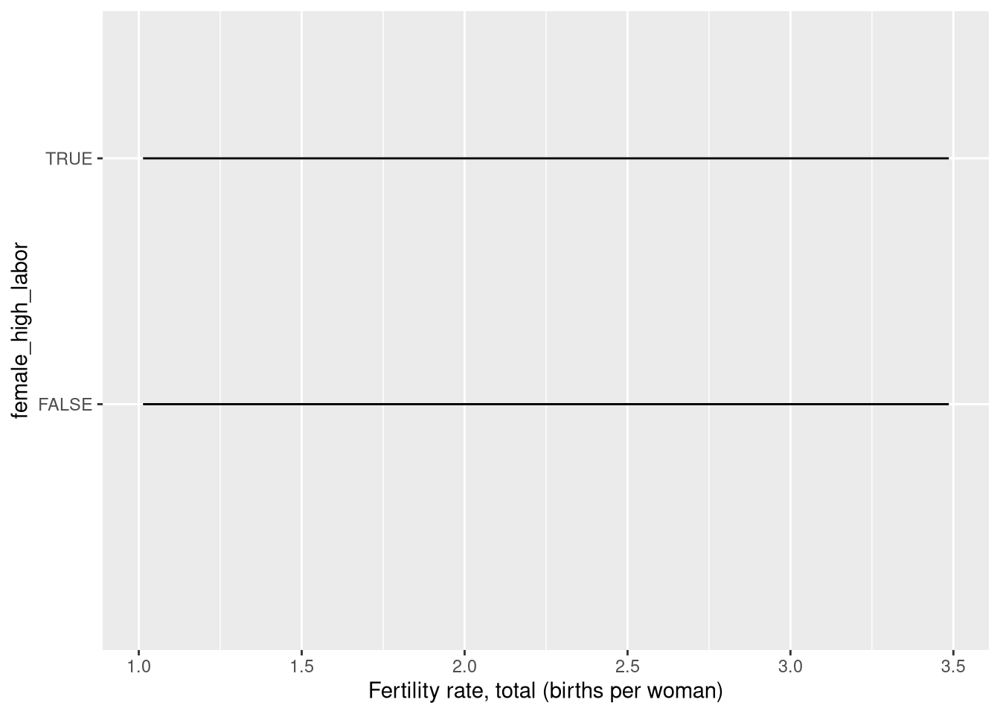
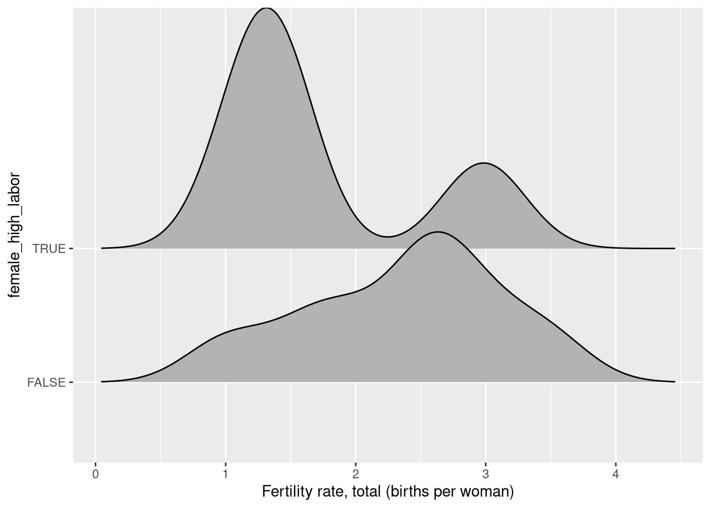
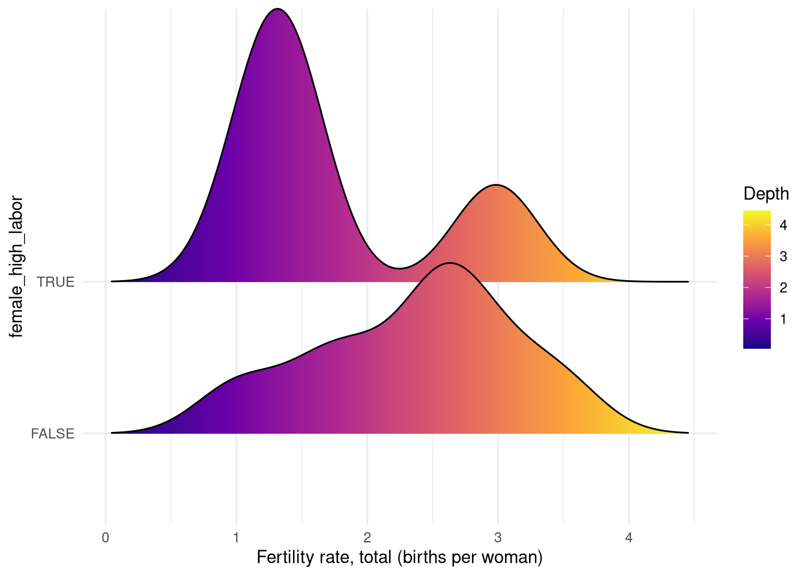

Copyright Ryan Womack, 2026. This work is licensed under CC BY-NC-SA 4.0
Data Visualization 1
visualization methods with R + comparison with Python
1 Overview
This workshop provides an overview of data visualization in R, primarily using ggplot2. For comparison purposes, an alternative Python approach using matplotlib and seaborn is illustrated in some cases.
Note that “packages” in R are the equivalent of “modules” in Python.
2 Setup and preparing data
2.1 R packages required
We will use the pak package for installation as a more complete approach to package management. Replace the pkg commands with install.packages() versions if you prefer.
This session relies on the tidyverse suite of packages for data manipulation as a preference, although the same tasks could be accomplished in base R. We will focus on ggplot2 and its related ecosystem of extensions and helper packages. A few of the packages are used only for very brief illustration purposes, including one that uses github installaion. You can skip that if you’re not familiar with this methods. Install pak and tidyverse if you don’t already have them on your system. We will also need reticulate to run Python code chunks. The other packages are listed in the code below:
Code
install.packages("pak", dependencies=TRUE)library(pak)pkg_install("tidyverse")pkg_install("reticulate")pkg_install("gganimate")pkg_install("ggridges")pkg_install("ggthemes")pkg_install("magick")pkg_install("RColorBrewer")pkg_install("hexbin")pkg_install("ggiraph")pkg_install("patchwork")pkg_install("sf")pkg_install("plotly")# less importantpkg_install("Ecdat")pkg_install("remotes")remotes::install_github("R-CoderDotCom/ggcats@main")devtools::session_info()
Now let’s load the needed packages and reticulate (for Python support only). For reticulate, you will need to edit the path to match where Python resides on your system.
Code
library(tidyverse)
── Attaching core tidyverse packages ──────────────────────── tidyverse 2.0.0 ──
✔ dplyr 1.2.1 ✔ readr 2.2.0
✔ forcats 1.0.1 ✔ stringr 1.6.0
✔ ggplot2 4.0.3 ✔ tibble 3.3.1
✔ lubridate 1.9.5 ✔ tidyr 1.3.2
✔ purrr 1.2.2
── Conflicts ────────────────────────────────────────── tidyverse_conflicts() ──
✖ dplyr::filter() masks stats::filter()
✖ dplyr::lag() masks stats::lag()
ℹ Use the conflicted package (<http://conflicted.r-lib.org/>) to force all conflicts to become errors
Linking to GEOS 3.13.1, GDAL 3.10.3, PROJ 9.6.0; sf_use_s2() is TRUE
Code
library(plotly)
Attaching package: 'plotly'
The following object is masked from 'package:ggplot2':
last_plot
The following object is masked from 'package:stats':
filter
The following object is masked from 'package:graphics':
layout
Code
# less importantlibrary(Ecdat)
Attaching package: 'Ecdat'
The following object is masked from 'package:datasets':
Orange
Code
library(remotes)library(ggcats)
~~ Package ggcats
Visit https://r-coder.com/ for R tutorials ~~
Rows: 372504 Columns: 70
── Column specification ────────────────────────────────────────────────────────
Delimiter: ","
chr (4): Country Name, Country Code, Indicator Name, Indicator Code
dbl (66): 1960, 1961, 1962, 1963, 1964, 1965, 1966, 1967, 1968, 1969, 1970, ...
ℹ Use `spec()` to retrieve the full column specification for this data.
ℹ Specify the column types or set `show_col_types = FALSE` to quiet this message.
Now we’ll perform a few steps to clean the data. We will use two versions of this data, one is the gender_data_final file of all countries and regions, for 170 selected variables from the latest available data year with complete data, typically the year before the last in the data set. The second is a shorter list of our chosen countries, gender_data_filtered, based on a dozen countries (Central Asia and Mongolia plus selected high population or high income countries). For this session, we’ll just run these steps without explaining them. Data cleaning and wrangling is covered in more detail in the Data Analysis 1 workshop. We will attach these as needed so that a copy of the data is made the default dataset for this session.
Code
# clean the data to remove superfluous columnsnames(gender_data)gender_data <- gender_data[,c(-2,-4)]names(gender_data)# clean the data to focus on a recent more complete time periodgender_data2 <- gender_data %>%pivot_longer(3:68, names_to ="Year", values_to ="Value")#filter by yeargender_data2024 <- gender_data2 %>%filter(Year=="2024")gender_data2024 <- gender_data2024[,-3]gender_data2024wide <- gender_data2024 %>%pivot_wider(names_from ="Indicator Name", values_from ="Value")# now use a little sapply trick to select variables that don't have much missing data - here the proportion is 0.75 (the 0.25 in the function is 1-proportion desired)gender_data_filtered <- gender_data2024wide[,!sapply(gender_data2024wide, function(x) mean(is.na(x)))>0.25]# and lastly simplify the dataset by removing some of the topics we won't usephrases <-c("Worried", "Made", "Received", "Saved", "Used", "Coming", "Borrowed")gender_data_final <- gender_data_filtered %>%select(!starts_with(phrases))# we'll also generate a couple of variables for future usegender_data_final$female_high_labor <- gender_data_final$`Labor force participation rate, female (% of female population ages 15-64) (modeled ILO estimate)`>70gender_data_final$male_high_labor <- gender_data_final$`Labor force participation rate, male (% of male population ages 15-64) (modeled ILO estimate)`>70# also for one step with pthongender_data_final$female_high_numeric <-as.numeric(gender_data_final$female_high_labor)# select countries of interestcountry_list <-c("China", "Germany", "India", "Japan", "Kazakhstan", "Kyrgyz Republic", "Mongolia", "Russian Federation", "Tajikistan", "Turkmenistan", "United States", "Uzbekistan")gender_data_selected <- gender_data_final %>%filter(`Country Name`%in% country_list)attach(gender_data_final)
We will have some missing data issues, so get rid of NAs with the following code, taking care over the form of the quotes and variable names since these commands are fussy. We will also provide short versions of our variable names for later use. This is just a convenience to shorten some later commands.
Code
gender_data_final <- gender_data_final |>drop_na(`Labor force participation rate for ages 15-24, female (%) (modeled ILO estimate)`) |>drop_na(`Labor force participation rate for ages 15-24, male (%) (modeled ILO estimate)`) |>drop_na(`GDP per capita (constant 2015 US$)`) |>drop_na(`Fertility rate, total (births per woman)`)# and redefine the selected list after these changes gender_data_selected <- gender_data_final %>%filter(`Country Name`%in% country_list)attach(gender_data_final)# short nameslabor_f <- gender_data_final$'Labor force participation rate for ages 15-24, female (%) (modeled ILO estimate)'labor_m <- gender_data_final$'Labor force participation rate for ages 15-24, male (%) (modeled ILO estimate)'gdp <- gender_data_final$'GDP per capita (constant 2015 US$)'fertility <- gender_data_final$'Fertility rate, total (births per woman)'s_labor_f <- gender_data_selected$'Labor force participation rate for ages 15-24, female (%) (modeled ILO estimate)'s_labor_m <- gender_data_selected$'Labor force participation rate for ages 15-24, male (%) (modeled ILO estimate)'s_gdp <- gender_data_selected$'GDP per capita (constant 2015 US$)'s_fertility <- gender_data_selected$`Fertility rate, total (births per woman)`
3 Data Visualization
We will explore via visualization some basic relationships between labor participation, gender, fertility, and income, using the World Bank’s own definition of gender:
“Gender refers to the social, behavioral, and cultural attributes, expectations, and norms associated with being male or female.”
Note that this is just for the purposes of demonstration, and not a serious investigation into these important research issues.
3.1 base R graphics and lattice
In previous versions of my data visualization workshops, I have begun by giving examples from base R’s graphics package, which loads by default in R, and the lattice package, which uses mostly base R syntax to accomplish some more powerful tasks with grouping data. Those are worthwhile things to learn, and you will still encounter a lot of code using them. However, including that material would keep this from being a concise, focused session on getting started with ggplot2, so they are omitted here.
Learners interested in more on graphics and lattice can consult the older “tidyverse approach” version of this workshop at my github.
A quick overview of base R graphics is provided by intro2r.
References and examples to base R (and some ggplot2) plot techniques can be found at R charts and R graph gallery.
3.2 goals of visualization
This session will run through various coding examples, but the underlying philosophy is that in order to understand our research data, we should have multiple tools at our disposal to learn about the data’s structure and characteristics. Applying various visualizations and graphic techniques to data can reveal those patterns.
3.3 why ggplot2?
Just as with other tidyverse packages, we choose ggplot2 because it gives us a large degree of functionality with consistent, layerable commands, and produces high quality output that does not need much tweaking to be publication ready. It does not represent the complete possibilities of R that are spread out across numerous packages, but it represents an excellent starting point to get up and running quickly.
Like other tidyverse commands, the complete documentation for ggplot2 is available not only R help, but conveniently online at ggplot2.tidyverse.org.
4 Basic examples and syntax
Despite what we said about focusing on ggplot2, I will use one base R graphics command, to illustrate “standard” R syntax: namely, everything in a single command, with nested parentheses. The command plot generates a scatterplot. We can also layer a line on top of the plot (here a regression line) in a separate step.
What happened here? Something happened. We can see that the coordinates have been mapped out according to the available data. But where is our scatterplot?
The answer: ggplot uses multi-part commands, linking an initial statement defining the data to be graphed to at least one other statement specifying the kind of plot, using a “+” symbol.
We can also modify portions of the graph by passing options inside the relevant segment of the code. In the example below, we pass an option to color the points (inside the geom_point command), according to whether the country has a high or low female labor participation rate, as defined in our data setup.
ggplot uses some default conventions from best principles in the data visualization world, such as the light grey background, allowing a subtle grid to be shown, that locates the data without overshadowing the points. In general, the visualizations are “well-behaved” in this way.
We can also layer a regression line on top of the plot. This occurs in a natural way with another “+” defining the additional type of graphing to be done. The term “geom” for geometry is ggplot’s lingo for these different kinds of visualizations. Vist the ggplot2 site for the list of geoms available.
Putting a 45-degree line on the plot shows us that for nearly all but a few countries, male labor force participation is higher than female.
Much of ggplot2’s distinctive syntax is because it is derived from the book The Grammar of Graphics, which proposed a theoretical framework for computer graphics, that separated different aspects of graphing into different parts. While the book is online via Springer Nature, the Wikipedia summary may serve as a starting point.
The term “aes”, frequently encountered in ggplot2 commands, is short for aesthetics, namely the look and feel of whatever element you are modified. The initial “aes” statement specifies that we want to visualize (the look and feel) of particular data elements. The “aes” modifier can also appear in other syntax elements, modifying the look of the graph, the theme, or other things.
If the initial statement is the subject, and the “geom” commands are verbs, other modifiers can be viewed as adjectives or adverbs, such as facet, labels (“labs”), theme, and more.
There was presumably a ggplot before ggplot2, but ggplot2 itself has been around for a long time. I haven’t researched the precise history of that.
Why do we bother with this approach? Because modularizing the code this way makes it more easily understood, modifiable, and reusable. We’ll see some examples of this shortly.
6 Detour into Python
We will be giving a flavor of the Python approach to graphics, without going in depth. Python is covered in other workshops in greater detail.
Running Python in RStudio requires the reticulate package. The leading modules for graphics and visualization in Python are matplotlib and seaborn, which you should have installed, along with numpy and scipy.
Note that our code chunk is labeled Python. For more reticulate package, see this post
Also note that it is also possible to invoke R from a Python environment using rpy2
6.1matplotlib
Use of matplotlib is fundamental in the world of Python graphics. Its style is comparable to that of base R. Little is done automatically, but we can pass, line-by-line, and parameter-by-parameter, everything that will control and tweak the image.
The unique step in reticulate is that we pass the R data object to Python in a separate step (r.gender_data_final). Otherwise, this is straight Python code.
import numpy as npimport pandas as pdimport matplotlib.pyplot as pltimport seaborn as snsfrom scipy import stats# import from Rgender_python = r.gender_data_final# specify variableslabor = gender_python.loc[:,"Labor force participation rate, female (% of female population ages 15-64) (modeled ILO estimate)"]gdp = gender_python.loc[:,"GDP per capita (constant 2015 US$)"]# Initialize layoutfig, ax = plt.subplots(figsize=(9, 9))# Add scatterplotax.scatter(labor, gdp, s=60, alpha=0.7, edgecolors="k")# Fit linear regression via least squares with numpy.polyfit# It returns an slope (b) and intercept (a)# deg=1 means linear fit (i.e. polynomial of degree 1)b, a = np.polyfit(labor, gdp, deg=1)# Create sequence of 100 numbers from 0 to 100xseq = np.linspace(0, 100, num=1000)# Plot regression lineax.plot(xseq, a + b * xseq, color="k", lw=2.5)# show the plotplt.show()

6.2seaborn
The seaborn module is not directly comparable to ggplot2, but in contrast to matplotlib, it does attempt to provide users with graphs that are “pretty by default”, while giving up fine-grained control. Sometimes seaborn is a useful way to quickly achieve the desired output and save time.
While we can use the buttons within Rstudio to save and export our graphs, it is very useful to do this precisely and reproducibly in code. A feature not available in base R graphics is the ability to store ggplot2 graphs as reusable objects in the R workspace. Using the usual R assignment operator, we can easily have multiple graphs at our fingertips to pull up, compare, or modify.
We can also export PDFs or image files (PNG, JPG, TIFF, BMP) directly with code, allowing to specify a filename and location, and parameters such as image quality and image size.
These commands first initiate the routing of output to a file (via “pdf” or “png” or similar), then execute a graph command (PDFs can hold multiple graphs too), which will not display on screen. Finally the “dev.off” command turns off the routing to a file. The cryptic “null device” statement indicates that the process has concluded.
Code
# export pdf pdf(file="output.pdf")ggplot(data=gender_data_final, aes(x=labor_m, y=labor_f)) +geom_point(color="purple3", pch=19) +geom_abline(intercept =0, slope =1) +labs(x="male labor participation (percent)", y="female labor participation (percent)", title="Comparing male and female labor participation") dev.off()
We need to take some care with the type of variables we use and match them to our commands.
There are two types of bar charts: geom_bar() and geom_col(). geom_bar() makes the height of the bar proportional to the number of cases in each group (or if the weight aesthetic is supplied, the sum of the weights). If you want the heights of the bars to represent values in the data, use geom_col() instead. geom_bar() uses stat_count() by default: it counts the number of cases at each x position. geom_col() uses stat_identity(): it leaves the data as is. We can also tweak some of the options to improve legibility.
To change the title position to centered throughout our session, we can use theme_update to accomplish this. The 0.5 indicates that the title should be placed 50% of the way across the image.
Code
theme_update(plot.title =element_text(hjust =0.5))ggplot() +ggtitle("Default is now set to centered")
7.3 histogram
The basic histogram is straightforward, but once again we may wish to enhance by techniques such as adjusting the fill color by the count of the data, illustrated below:
`stat_bin()` using `bins = 30`. Pick better value `binwidth`.

7.4 histogram - Python edition
Just a quick illustration of the histogram done with matplotlib.
Code
import matplotlib.pyplot as plt# Load the example tips datasetgender_python = r.gender_data_final# specify variableslabor_f = gender_python.loc[:,"Labor force participation rate, female (% of female population ages 15-64) (modeled ILO estimate)"]female_high_numeric = gender_python.loc[:,"female_high_numeric"]# matplotlib versionfig.clear()data = gender_python["Labor force participation rate, female (% of female population ages 15-64) (modeled ILO estimate)"]plt.hist(data, color='skyblue', edgecolor='black')plt.xlabel('percent participation')plt.ylabel('Count')plt.title('Histogram of female labor participation')plt.show()
And now with seaborn.
Code
import seaborn as snssns.set_theme()# Load the example tips datasetgender_python = r.gender_data_final# specify variableslabor_f = gender_python.loc[:,"Labor force participation rate, female (% of female population ages 15-64) (modeled ILO estimate)"]female_high_numeric = gender_python.loc[:,"female_high_numeric"]# seaborn versionfig, ax = plt.subplots(figsize=(8, 6))chart = sns.histplot(data=gender_python, x="Labor force participation rate, female (% of female population ages 15-64) (modeled ILO estimate)")chart.set_title('Histogram of female labor participation')chart.set_xlabel('percent participation')chart.set_ylabel('Count')plt.show()
7.5 box plot
Box plots are commonly used in science and are useful for understanding the range and concentration of the distribution of data. The box plot is quickly illustrated below, in plain form. The coord_flip command is a separate piece of “grammar” that transposes the graph.
Let’s look at quick examples of boxplots in matplotlib and seaborn. In general, we can always use the commands that we are most familiar with and best suit our needs. There is no one path to the best output in data visualization!
Code
import matplotlib.pyplot as plt# Load the example tips datasetgender_python = r.gender_data_final# specify variableslabor_f = gender_python.loc[:,"Labor force participation rate, female (% of female population ages 15-64) (modeled ILO estimate)"]female_high_numeric = gender_python.loc[:,"female_high_numeric"]# matplotlib versionfig.clear()fig, ax = plt.subplots(figsize=(8, 6))plt.boxplot(labor_f, patch_artist=True, boxprops=dict(facecolor='skyblue'))
{'whiskers': [<matplotlib.lines.Line2D object at 0x7f0eb250e490>, <matplotlib.lines.Line2D object at 0x7f0eb250ead0>], 'caps': [<matplotlib.lines.Line2D object at 0x7f0eb250f110>, <matplotlib.lines.Line2D object at 0x7f0eb250efd0>], 'boxes': [<matplotlib.patches.PathPatch object at 0x7f0eb2919a90>], 'medians': [<matplotlib.lines.Line2D object at 0x7f0eb250ee90>], 'fliers': [<matplotlib.lines.Line2D object at 0x7f0eb250ed50>], 'means': []}
Code
plt.xlabel('')plt.ylabel('percent participation')plt.title('box plot of female labor participation')plt.show()
Note that breaking the data into groups is not so easy in matplotlib. We would have to pass a matrix of data with two different columns for two different groups. Our dataset is not set up this way, and so it is easier to turn to seaborn to plot two or more groups of data.
Code
import seaborn as snssns.set_theme()# Load the example tips datasetgender_python = r.gender_data_final# specify variableslabor_f = gender_python.loc[:,"Labor force participation rate, female (% of female population ages 15-64) (modeled ILO estimate)"]female_high_numeric = gender_python.loc[:,"female_high_numeric"]# Draw a seaborn boxplotfig, ax = plt.subplots(figsize=(8, 6))chart = sns.boxplot(x=female_high_numeric, y=labor_f)chart.set_title('low (0) and high (1) groups')chart.set_xlabel('percent participation')chart.set_ylabel('box plot of female labor participation')plt.show()
7.7 hexbin
The hexbin method uses shaded hexagonal tiles to illustrate the amount of data in each area. This is another way of understanding data density, implemented in ggplot2 with geom_hex.
A regression line can be added as a separate “geom” with geom_smooth, which can produce several types of fitted lines: here method lm is used for a linear regression. The stat_smooth generates a curved line that is another way to represent best fit. The default implementation (which can be modified) is a LOESS fit. Confidence bands illustrating the accuracy of the fit are automatically shown. We can also plot customized confidence interval bands, but this requires computing them separately [see ggplot2 help]. Here the examples show the positive relationship between male and female labor participation rates.
`geom_smooth()` using method = 'loess' and formula = 'y ~ x'
7.9 theme tweaks
Here we simply illustrate a few ways of changing the theme look and feel. In general, the graphs are infinitely customizable. We also invoke options to adjust the color and palettes used for the plots.
ggplot(gender_data_final, aes(x=fertility, y=gdp)) +facet_grid(.~female_high_labor) +geom_point(aes(color=gdp)) +scale_colour_distiller(palette ="Dark2", trans ="reverse")
Code
# this option can be used in some contexts# scale_color_manual(values = c("yellow","orange","pink","red","purple"))
8 Using the power
Here we show the power of the Grammar of Graphics in action. We can store R objects that correspond to the data elements of our graph, a theme applied to the graph, and the type of graph to be created. By then stringing these together, we generate a complete graph. Note the scale_colour_distiller must be attached to the ggplot data object, not to some other part of the syntax.
Using this, we can write clean code that has simplified commands. Then, if we wish to modify the data being plotted, or change the theme across all code, or similar, we can simply edit the initial line of code that defines mydata or mytheme.
Plotly provides interactive visualization in Python, Javascript, and other environments. The plotly package in R brings interactivity to R graphics in a ggplot-friendly syntax. Plotly has the additional advantage of seamlessly working across Python and R and other languages with the same framework. Also, unlike the ggplot2 commands used up to now, Plotly output is web-friendly and can be embedded in HTML easily.
We will just provide a quick example of that here, but interactivity is an important tool in allowing the user to explore the richness of complex data sources. Plotly does this, and Shiny, which is the main subject of the Data Visualization 2 workshop, takes interactivity even further.
In this example, a quick invocation of ggplotly allows mouseover reveals of data points.
There is an entire ecosystem of extensions to ggplot, which can be browsed at the ggplot extensions page. We’ll look at one of these (ggridges) below, and a few others later.
10.1 density plot and ggridges
We will look at one more geom variant, and use it to illustrate the use of helper packages, in this case ggridges, which provides some enhancements to the appearance and layout of the graphs. Note that geom_density produces an uninformative result, while geom_density_ridges is informative, but plain. And finally geom_density_ridges_gradient produces a more elegant result.
Code
ggplot(gender_data_selected, aes( x =`Fertility rate, total (births per woman)`, y =`female_high_labor`)) +geom_density()

Code
ggplot(gender_data_selected, aes( x =`Fertility rate, total (births per woman)`, y =`female_high_labor`)) +geom_density_ridges()
Picking joint bandwidth of 0.322

Code
ggplot(gender_data_selected, aes( x =`Fertility rate, total (births per woman)`, y =`female_high_labor`, fill =stat(x))) +geom_density_ridges_gradient() +scale_fill_viridis_c(name ="Depth", option ="C") +coord_cartesian(clip ="off") +# To avoid cut offtheme_minimal()
Warning: `stat(x)` was deprecated in ggplot2 3.4.0.
ℹ Please use `after_stat(x)` instead.
Picking joint bandwidth of 0.322

11 The grammar in action
We turn to an iterative example that will help understand how the syntactic elements of the grammar of graphics can be used to tweak output to achieve specific results.
Here we first apply a log transformation to the scales, a separate grammatical element.
`geom_smooth()` using method = 'loess' and formula = 'y ~ x'
11.1 add color
We apply color elements in various places in the grammar. Note we can use one setting, then partially override it with others, to achieve examples such as the last one below, with colored regression lines, but uniform points.
And a second example illustrating using different cats to represent different data elements. This is a quick example using the built-in iris dataset.
Code
# Create a new columniris$cat <-factor(iris$Species,labels =c("pusheen", "toast","venus"))# Scatter plot by groupggplot(iris, aes(Petal.Length, Petal.Width)) +geom_cat(aes(cat = cat), size =4)
13 Chloropleth maps and ggiraph
Here we sketch some additional functionality, by including a chloropleth (shaded) map in a combined html graph developed using the ggiraph package. The final result is an html file that you will want to browse to on your computer to view.
Code
# Read the full world mapworld_sf <-read_sf("https://raw.githubusercontent.com/holtzy/R-graph-gallery/master/DATA/world.geojson")world_sf <- world_sf %>%filter(!name %in%c("Antarctica", "Greenland"))# Join the gender data with the full world mapgender_data_final_geo <- world_sf |>left_join(gender_data_final, by =c("name"="Country Name"))attach(gender_data_selected)# Create the first chart (Scatter plot)p1 <-ggplot(gender_data_selected, aes(s_gdp, s_fertility,tooltip =`Country Name`,data_id =`Country Name`,color =`Country Name`)) +geom_point_interactive(data =filter(gender_data_selected, !is.na(s_gdp)), size =4) +theme_minimal() +theme(axis.title.x =element_blank(),axis.title.y =element_blank(),legend.position ="none" )# Create the second chart (Bar plot)p2 <-ggplot(gender_data_selected, aes(x =reorder(`Country Name`, s_gdp),y = s_fertility,tooltip =`Country Name`,data_id =`Country Name`,fill =`Country Name`)) +geom_col_interactive(data =filter(gender_data_selected, !is.na(s_gdp))) +coord_flip() +theme_minimal() +theme(axis.title.x =element_blank(),axis.title.y =element_blank(),legend.position ="none" )# Create the third chart (choropleth)p3 <-ggplot() +geom_sf(data = gender_data_final_geo, fill ="lightgrey", color ="lightgrey") +geom_sf_interactive(data =filter(gender_data_final_geo, !is.na(geometry)),aes(fill =`name`, tooltip =`name`, data_id =`name`) ) +coord_sf(crs =st_crs(3857)) +theme_void() +theme(axis.title.x =element_blank(),axis.title.y =element_blank(),legend.position ="none" )# Combine the plotscombined_plot <- (p1 + p2) / p3 +plot_layout(heights =c(1, 2))# Create the interactive plotinteractive_plot <-girafe(ggobj = combined_plot)interactive_plot <-girafe_options( interactive_plot,opts_hover(css ="fill:red;stroke:black;"))# save as an html widgethtmltools::save_html(interactive_plot, "multiple-ggiraph-2.html")
14 Animated cats
We leave you with a whimsical animated example.
Code
library(Ecdat)data(incomeInequality)library(tidyverse)library(ggcats)library(gganimate) dat <- incomeInequality %>%select(Year, P99, median) %>%rename(income_median = median,income_99percent = P99) %>%pivot_longer(cols =starts_with("income"),names_to ="income",names_prefix ="income_")dat$cat <-rep(NA, 132)dat$cat[which(dat$income =="median")] <-"nyancat"dat$cat[which(dat$income =="99percent")] <-rep(c("pop_close", "pop"), 33)ggplot(dat, aes(x = Year, y = value, group = income, color = income)) +geom_line(linewidth =2) +ggtitle("ggcats, a core package of the memeverse") +geom_cat(aes(cat = cat), size =5) +xlab("Cats") +ylab("Cats") +theme(legend.position ="none",plot.title =element_text(size =20),axis.text =element_blank(),axis.ticks =element_blank()) +transition_reveal(Year)
`geom_line()`: Each group consists of only one observation.
ℹ Do you need to adjust the group aesthetic?
`geom_line()`: Each group consists of only one observation.
ℹ Do you need to adjust the group aesthetic?